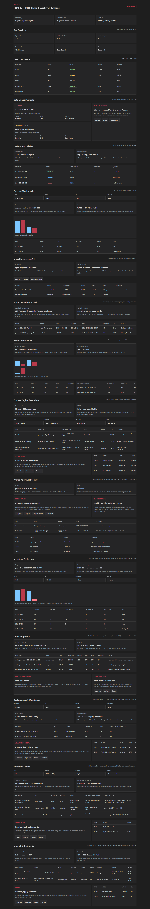

OPEN FNR Sprint 15: Manual Adjustments Framework
Аннотация: тестируем безопасный слой ручных корректировок, где исходный ML forecast или order proposal не затирается, а поверх него применяется adjustment overlay с reason, validity period, preview impact, approval и audit.
UI-тестирование
- Открываем блок
Manual Adjustments. - Проверяем adjustment modal: target, mode, value, reason, scope, validity dates.
- Проверяем impact preview: 120 -> 132, 4 rows affected.
- Проверяем таблицу adjustment overlays: forecast и order proposal.
- Проверяем action buttons: Preview, Approve, Apply, Cancel.
- Проверяем audit timeline: old value, new value, actor, reason.

Бизнес-процесс по шагам
| Шаг | Действие | Зачем | Результат |
|---|---|---|---|
| 1 | Planner создает adjustment с target и scope. | Корректировка должна быть ограничена магазином, SKU и датами. | Scope валидируется. |
| 2 | Planner указывает reason code и comment. | Без причины ручная корректировка запрещена. | Reason required в контракте. |
| 3 | System считает preview impact. | Пользователь должен видеть эффект до применения. | 120 -> 132, delta 12. |
| 4 | DMN решает, нужно ли approval. | Большие изменения требуют контроля. | +10% требует approval. |
| 5 | System применяет overlay. | Исходный ML forecast/order proposal не затирается. | Adjustment хранится отдельно. |
| 6 | System пишет audit old/new value. | Все ручные изменения должны быть восстанавливаемыми. | Audit event создается. |
Автоматические проверки
| Команда | Результат |
|---|---|
python -m pytest |
117 passed |
npm.cmd run build |
Frontend build completed |